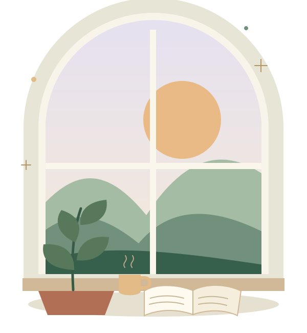

STUDENT LIFE. A LITTLE LIGHTER.
A little space
for your mind.
University life can be a lot. Find everyday self-care ideas, thoughtful reading and ways to reach support — at your own pace.
Small steps count. You don’t need to have it all figured out.

There’s room to
begin again.
begin again.
GROW AT YOUR OWN PACE
WHEREVER YOU ARE TODAY
Find a softer starting point.
You don’t have to do everything.
Start with what feels useful.
- WHEN IT FEELS LIKE A LOT
Make room for calm.
Read about stress, study pressure and finding a little balance.
Explore the articles - A LITTLE EVERY DAY
Come back to yourself.
Discover self-care ideas and a gentle seven-day challenge.
Find a small practice - YOU DON’T HAVE TO DO IT ALONE
Find a way to support.
Browse South African resource links and university services.
Browse the directory
A MOMENT TO UNDERSTAND